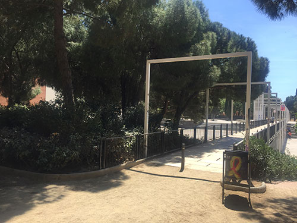
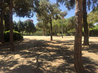
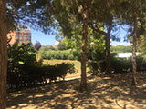

Aire Pur
Parc del Clot

El parc del Clot és un bon exemple de la integració d'elements arquitectònics preexistents en un espai verd. Els grans murs de l'antic taller de RENFE ornamenten i ordenen bona part del parc. Està format per quatre parts un llarg passeig i tres grans espais que ens permetrà gaudir d'un dia perfecte a l'aire lliure.
 